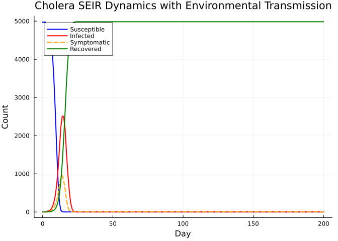
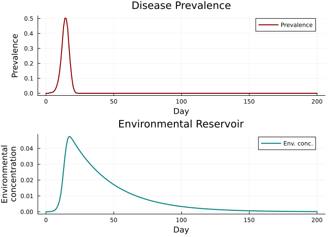

Cholera: Environmental Transmission
Simon Frost
- Overview
- Defining a custom Cholera disease
- Running the simulation
- Epidemic dynamics
- Environmental reservoir
- Key metrics
- Summary
Overview
Cholera is a waterborne disease caused by Vibrio cholerae. Unlike diseases transmitted solely through direct contact, cholera involves dual transmission routes:
- Direct — person-to-person via contact networks
- Environmental — shedding of bacteria into water, which creates an environmental reservoir
In this vignette, we build a cholera model in Starsim.jl that captures both routes, following the Python starsim_examples/diseases/cholera.py.
Defining a custom Cholera disease
We extend AbstractInfection with additional states for exposed, symptomatic, and recovered compartments, plus an environmental reservoir tracked via results.
using Starsim
using Plots
using Random
# ============================================================================
# Cholera — custom SEIR-like disease with environmental reservoir
# ============================================================================
mutable struct Cholera <: AbstractInfection
infection::InfectionData
# SEIR-like states
exposed::StateVector{Bool, Vector{Bool}}
symptomatic::StateVector{Bool, Vector{Bool}}
recovered::StateVector{Bool, Vector{Bool}}
# Timepoint states
ti_exposed::StateVector{Float64, Vector{Float64}}
ti_symptomatic::StateVector{Float64, Vector{Float64}}
ti_recovered::StateVector{Float64, Vector{Float64}}
ti_dead::StateVector{Float64, Vector{Float64}}
# Parameters
dur_exp::Float64
dur_symp::Float64
dur_asymp::Float64
p_symp::Float64
p_death::Float64
dur_to_dead::Float64
asymp_trans::Float64
# Environmental parameters
beta_env::Float64
half_sat::Float64
shedding_rate::Float64
decay_rate::Float64
# Environmental state (scalar, not per-agent)
env_prev::Float64
rng::StableRNG
end
function Cholera(;
name::Symbol = :cholera,
init_prev = 0.005,
beta = 0.5,
dur_exp = 2.772,
dur_symp = 5.0,
dur_asymp = 5.5,
p_symp = 0.5,
p_death = 0.005,
dur_to_dead = 1.0,
asymp_trans = 0.01,
beta_env = 0.5/3,
half_sat = 1_000_000.0,
shedding_rate = 10.0,
decay_rate = 0.033,
)
inf = InfectionData(name; init_prev=init_prev, beta=beta, label="Cholera")
Cholera(
inf,
BoolState(:exposed; default=false),
BoolState(:symptomatic; default=false),
BoolState(:recovered; default=false),
FloatState(:ti_exposed; default=Inf),
FloatState(:ti_symptomatic; default=Inf),
FloatState(:ti_recovered; default=Inf),
FloatState(:ti_dead; default=Inf),
Float64(dur_exp), Float64(dur_symp), Float64(dur_asymp),
Float64(p_symp), Float64(p_death), Float64(dur_to_dead),
Float64(asymp_trans),
Float64(beta_env), Float64(half_sat),
Float64(shedding_rate), Float64(decay_rate),
0.0,
StableRNG(0),
)
end
Starsim.disease_data(d::Cholera) = d.infection.dd
Starsim.module_data(d::Cholera) = d.infection.dd.mod
function Starsim.init_pre!(d::Cholera, sim)
md = module_data(d)
md.t = Timeline(start=sim.pars.start, stop=sim.pars.stop, dt=sim.pars.dt)
d.rng = StableRNG(hash(md.name) ⊻ sim.pars.rand_seed)
all_states = [d.infection.susceptible, d.infection.infected,
d.infection.ti_infected, d.infection.rel_sus,
d.infection.rel_trans, d.exposed, d.symptomatic,
d.recovered, d.ti_exposed, d.ti_symptomatic,
d.ti_recovered, d.ti_dead]
for s in all_states
add_module_state!(sim.people, s)
end
validate_beta!(d, sim)
npts = md.t.npts
define_results!(d,
Result(:new_infections; npts=npts, label="New infections"),
Result(:n_susceptible; npts=npts, label="Susceptible", scale=false),
Result(:n_infected; npts=npts, label="Infected", scale=false),
Result(:n_symptomatic; npts=npts, label="Symptomatic", scale=false),
Result(:n_recovered; npts=npts, label="Recovered", scale=false),
Result(:prevalence; npts=npts, label="Prevalence", scale=false),
Result(:new_deaths; npts=npts, label="New deaths"),
Result(:env_conc; npts=npts, label="Environmental concentration", scale=false),
)
md.initialized = true
return d
end
function Starsim.validate_beta!(d::Cholera, sim)
dd = disease_data(d)
dt = sim.pars.dt
if dd.beta isa Real
for (name, _) in sim.networks
dd.beta_per_dt[name] = 1.0 - exp(-Float64(dd.beta) * dt)
end
end
return d
end
function Starsim.init_post!(d::Cholera, sim)
people = sim.people
active = people.auids.values
n = length(active)
n_infect = max(1, Int(round(d.infection.dd.init_prev * n)))
n_infect = min(n_infect, n)
infect_uids = UIDs(active[randperm(d.rng, n)[1:n_infect]])
d.infection.susceptible[infect_uids] = false
d.exposed[infect_uids] = true
d.ti_exposed.raw[infect_uids.values] .= 1.0
# Set prognoses for initial infections
for u in infect_uids.values
d.infection.ti_infected.raw[u] = 1.0 + d.dur_exp + randn(d.rng) * 0.5
if rand(d.rng) < d.p_symp
d.ti_symptomatic.raw[u] = d.infection.ti_infected.raw[u]
if rand(d.rng) < d.p_death
d.ti_dead.raw[u] = d.ti_symptomatic.raw[u] + d.dur_to_dead
else
d.ti_recovered.raw[u] = d.ti_exposed.raw[u] + d.dur_symp + randn(d.rng)
end
else
d.ti_recovered.raw[u] = d.ti_exposed.raw[u] + d.dur_asymp + rand(d.rng) * 4.0
end
end
return d
end
function Starsim.step_state!(d::Cholera, sim)
ti = module_data(d).t.ti
# Exposed -> infected
for u in sim.people.auids.values
if d.exposed.raw[u] && d.infection.ti_infected.raw[u] <= ti
d.infection.infected.raw[u] = true
d.exposed.raw[u] = false
end
end
# Infected -> symptomatic
for u in sim.people.auids.values
if d.infection.infected.raw[u] && d.ti_symptomatic.raw[u] <= ti
d.symptomatic.raw[u] = true
end
end
# Infected -> recovered
for u in sim.people.auids.values
if d.infection.infected.raw[u] && d.ti_recovered.raw[u] <= ti
d.exposed.raw[u] = false
d.infection.infected.raw[u] = false
d.symptomatic.raw[u] = false
d.recovered.raw[u] = true
end
end
# Deaths
for u in sim.people.auids.values
if d.ti_dead.raw[u] <= ti && d.ti_dead.raw[u] != Inf
request_death!(sim.people, UIDs([u]), ti)
end
end
# Update environmental prevalence
n_symp = 0; n_asymp = 0
for u in sim.people.auids.values
if d.symptomatic.raw[u]
n_symp += 1
elseif d.infection.infected.raw[u] && !d.symptomatic.raw[u]
n_asymp += 1
end
end
new_bacteria = d.shedding_rate * (n_symp + d.asymp_trans * n_asymp) * sim.pars.dt
old_bacteria = d.env_prev * exp(-d.decay_rate * sim.pars.dt)
d.env_prev = new_bacteria + old_bacteria
return d
end
function Starsim.set_prognoses!(d::Cholera, target::Int, source::Int, sim)
ti = module_data(d).t.ti
d.infection.susceptible.raw[target] = false
d.exposed.raw[target] = true
d.ti_exposed.raw[target] = Float64(ti)
# Time from exposed to infected
d.infection.ti_infected.raw[target] = Float64(ti) + d.dur_exp + randn(d.rng) * 1.0
# Symptomatic or asymptomatic
if rand(d.rng) < d.p_symp
d.ti_symptomatic.raw[target] = d.infection.ti_infected.raw[target]
if rand(d.rng) < d.p_death
d.ti_dead.raw[target] = d.ti_symptomatic.raw[target] + d.dur_to_dead + randn(d.rng) * 0.3
else
d.ti_recovered.raw[target] = d.ti_exposed.raw[target] + d.dur_symp + randn(d.rng) * 1.0
end
else
d.ti_recovered.raw[target] = d.ti_exposed.raw[target] + d.dur_asymp + rand(d.rng) * 4.0
end
push!(d.infection.infection_sources, (target, source, ti))
return
end
function Starsim.step!(d::Cholera, sim)
# Standard network transmission
md = module_data(d)
ti = md.t.ti
dd = disease_data(d)
new_infections = 0
for (net_name, net) in sim.networks
edges = network_edges(net)
isempty(edges) && continue
beta_dt = get(dd.beta_per_dt, net_name, 0.0)
beta_dt == 0.0 && continue
p1 = edges.p1; p2 = edges.p2; eb = edges.beta
inf_raw = d.infection.infected.raw
sus_raw = d.infection.susceptible.raw
rt_raw = d.infection.rel_trans.raw
rs_raw = d.infection.rel_sus.raw
@inbounds for i in 1:length(edges)
src, trg = p1[i], p2[i]
if inf_raw[src] && sus_raw[trg]
p = rt_raw[src] * rs_raw[trg] * beta_dt * eb[i]
if rand(d.rng) < p
set_prognoses!(d, trg, src, sim)
new_infections += 1
end
end
if inf_raw[trg] && sus_raw[src]
p = rt_raw[trg] * rs_raw[src] * beta_dt * eb[i]
if rand(d.rng) < p
set_prognoses!(d, src, trg, sim)
new_infections += 1
end
end
end
end
# Environmental transmission
env_conc = d.env_prev / (d.env_prev + d.half_sat)
p_env = env_conc * d.beta_env * sim.pars.dt
for u in sim.people.auids.values
if d.infection.susceptible.raw[u] && rand(d.rng) < p_env
set_prognoses!(d, u, 0, sim)
new_infections += 1
end
end
return new_infections
end
function Starsim.step_die!(d::Cholera, death_uids::UIDs)
d.infection.susceptible[death_uids] = false
d.infection.infected[death_uids] = false
d.exposed[death_uids] = false
d.symptomatic[death_uids] = false
d.recovered[death_uids] = false
return d
end
function Starsim.update_results!(d::Cholera, sim)
md = module_data(d)
ti = md.t.ti
ti > length(md.results[:n_susceptible].values) && return d
active = sim.people.auids.values
n_sus = 0; n_inf = 0; n_rec = 0; n_symp = 0
@inbounds for u in active
n_sus += d.infection.susceptible.raw[u]
n_inf += d.infection.infected.raw[u]
n_rec += d.recovered.raw[u]
n_symp += d.symptomatic.raw[u]
end
md.results[:n_susceptible][ti] = Float64(n_sus)
md.results[:n_infected][ti] = Float64(n_inf)
md.results[:n_recovered][ti] = Float64(n_rec)
md.results[:n_symptomatic][ti] = Float64(n_symp)
md.results[:prevalence][ti] = length(active) > 0 ? n_inf / Float64(length(active)) : 0.0
md.results[:env_conc][ti] = d.env_prev / (d.env_prev + d.half_sat)
# Count deaths this timestep
n_deaths = 0
@inbounds for u in active
if d.ti_dead.raw[u] == Float64(ti)
n_deaths += 1
end
end
md.results[:new_deaths][ti] = Float64(n_deaths)
return d
end
function Starsim.finalize!(d::Cholera)
md = module_data(d)
for (target, source, ti) in d.infection.infection_sources
if ti > 0 && ti <= length(md.results[:new_infections].values)
md.results[:new_infections][ti] += 1.0
end
end
return d
endRunning the simulation
sim = Sim(
n_agents = 5_000,
networks = RandomNet(n_contacts=8),
diseases = Cholera(beta=0.5),
dt = 1.0,
stop = 200.0,
rand_seed = 42,
verbose = 0,
)
run!(sim)Sim(5000 agents, 0.0→200.0, dt=1.0, nets=1, dis=1, status=complete)Epidemic dynamics
n_sus = get_result(sim, :cholera, :n_susceptible)
n_inf = get_result(sim, :cholera, :n_infected)
n_rec = get_result(sim, :cholera, :n_recovered)
n_symp = get_result(sim, :cholera, :n_symptomatic)
tvec = 0:length(n_sus)-1
plot(tvec, n_sus, label="Susceptible", lw=2, color=:blue)
plot!(tvec, n_inf, label="Infected", lw=2, color=:red)
plot!(tvec, n_symp, label="Symptomatic", lw=2, color=:orange, ls=:dash)
plot!(tvec, n_rec, label="Recovered", lw=2, color=:green)
xlabel!("Day")
ylabel!("Count")
title!("Cholera SEIR Dynamics with Environmental Transmission")
Environmental reservoir
env_conc = get_result(sim, :cholera, :env_conc)
prev = get_result(sim, :cholera, :prevalence)
p1 = plot(tvec, prev, lw=2, color=:darkred, ylabel="Prevalence", label="Prevalence")
p2 = plot(tvec, env_conc, lw=2, color=:teal, ylabel="Environmental\nconcentration", label="Env. conc.")
plot(p1, p2, layout=(2, 1), xlabel="Day",
title=["Disease Prevalence" "Environmental Reservoir"])
Key metrics
println("Peak prevalence: $(round(maximum(prev), digits=4))")
println("Peak day: $(argmax(prev))")
println("Final recovered: $(Int(n_rec[end]))")
println("Peak environmental concentration: $(round(maximum(env_conc), digits=6))")Peak prevalence: 0.5034
Peak day: 15
Final recovered: 4984
Peak environmental concentration: 0.047522Summary
- Cholera’s dual transmission mechanism allows environmental persistence even without direct contact chains
- The environmental reservoir creates a positive feedback loop: more symptomatic cases → more shedding → higher environmental concentration → more infections
- Asymptomatic individuals contribute much less to environmental contamination (100–1000x less shedding)
- Interventions targeting water sanitation (reducing
beta_env) can be highly effective